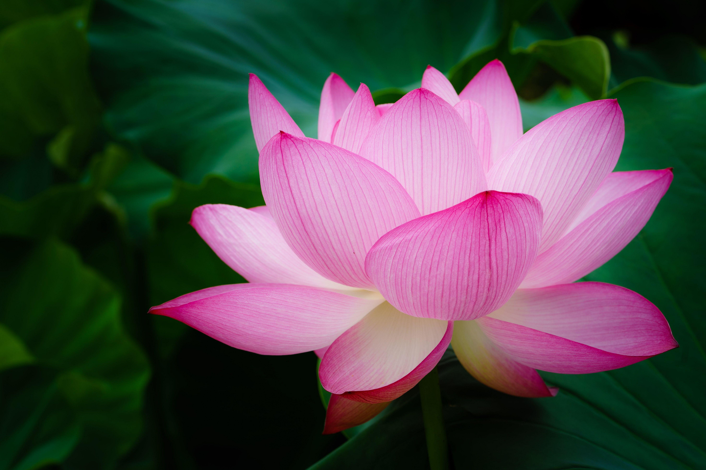
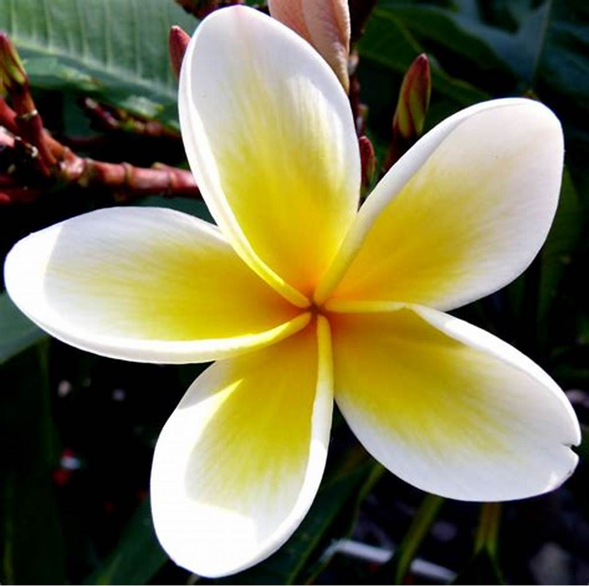

| 1 |
Daisy |
 |
They represent innocence, purity, loyalty, patience, and simplicity. The name "daisy" originates from the Old English phrase "Daes eage", meaning "day's eye", because the flower opens in the morning and closes at night. |
| 2 |
Lotus |
 |
Lotus flowers come in pink, white, yellow, and blue varieties, with large, round leaves that float on water. In Hinduism and Buddhism, the lotus represents purity, enlightenment, and rebirth. It is also India's national flower. |
| 3 |
Plumeria |
 |
Plumeria, also known as frangipani, is a tropical flowering plant famous for its fragrant and vibrant blossoms. These flowers come in a variety of colors, including pink, red, white, yellow, and orange. Plumeria trees are small or low shrubs, often found in warm climates like Hawaii and the Caribbean. |
| 4 |
Tulip |
|
Tulips are spring-blooming perennial flowers that belong to the lily family (Liliaceae). They are known for their bright, cup-shaped blooms that come in a variety of colors, including red, pink, yellow, white, and purple. Tulips grow from bulbs and are widely cultivated in gardens and floral arrangements. |